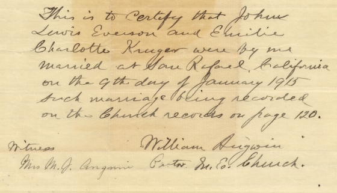

Jack & Millie's marriage license

A bit of mystery here; I was six at the time. Best guess is that they were originally married in 1907, as Jack says (page 82) and that the original license was lost in the fire. Or did they live together for seven years or so??